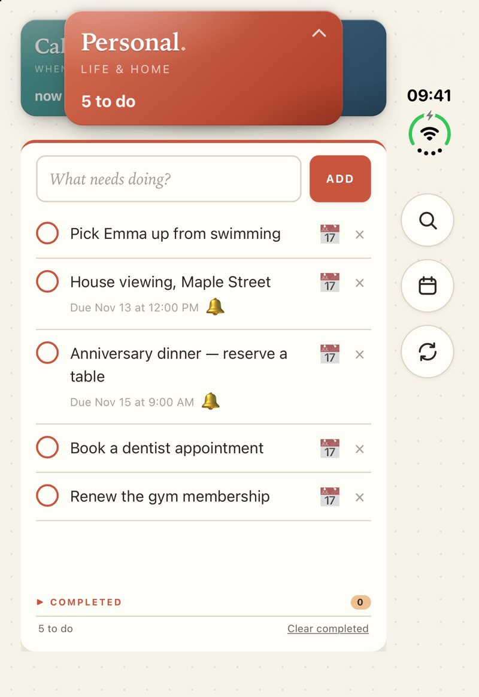
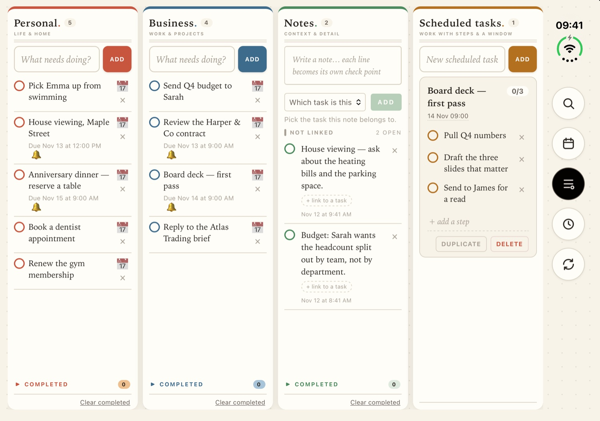
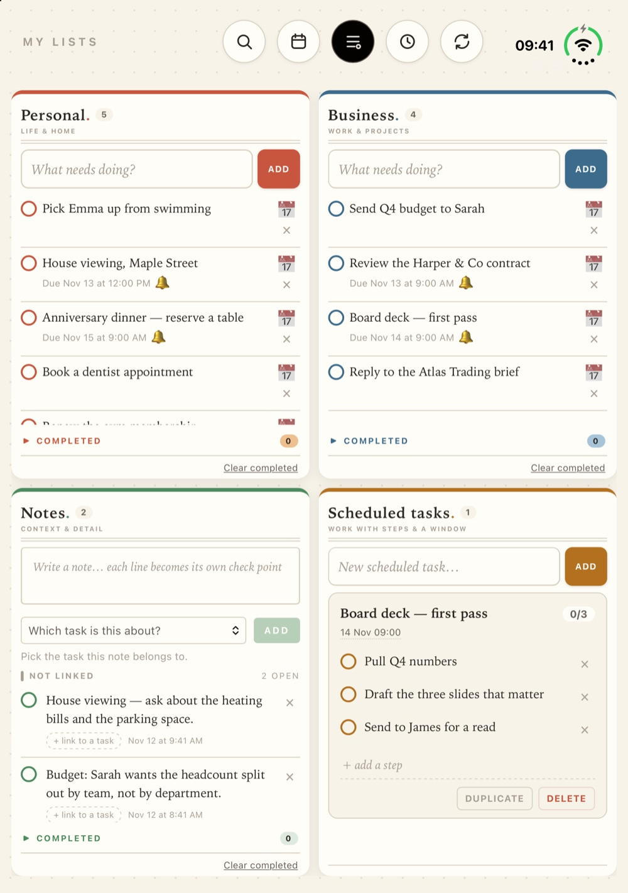
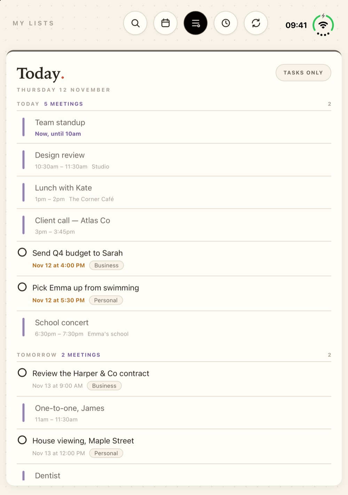
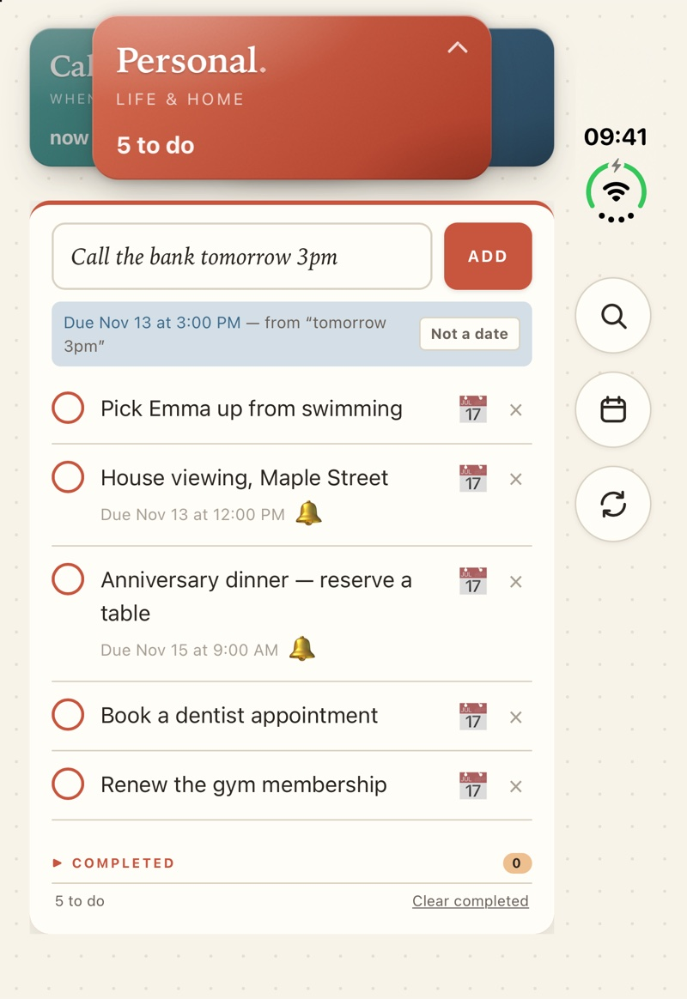
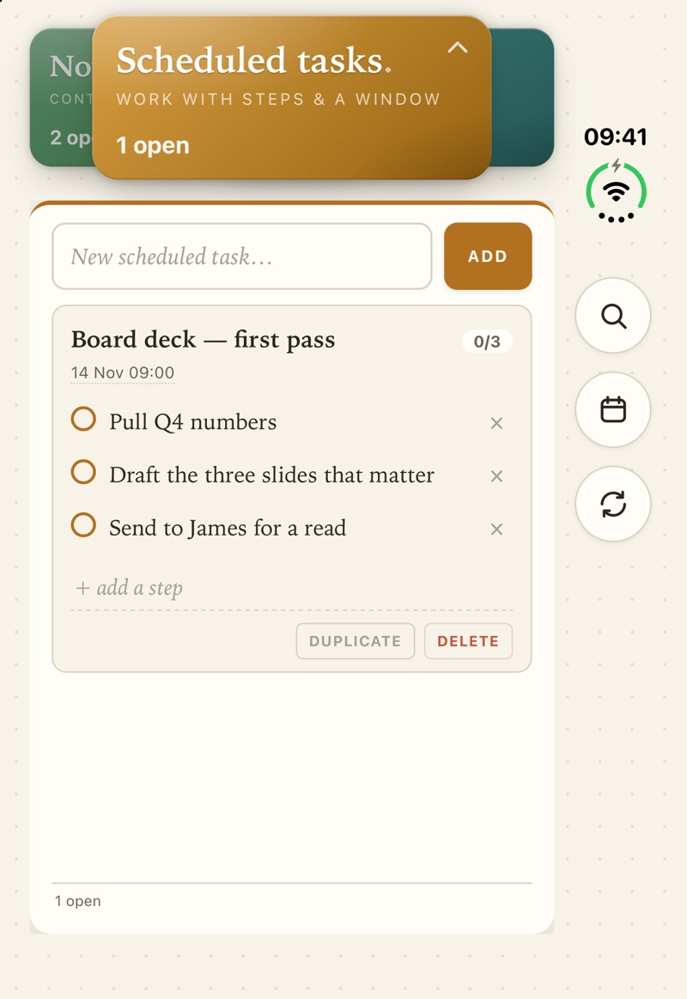
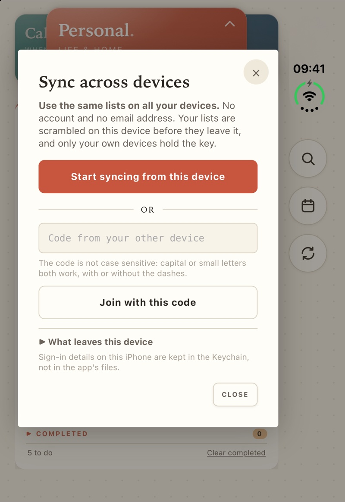

Made for iPhone Duo
Closed, one list. Open, all of them.
Do. is a to-do list that follows the fold. Your tasks, notes, plans and calendar in one calm place, kept on your device.
The iPhone app is on its way to the App Store. The web version works today, with no sign-up.
An animation of the real app, with invented tasks. Tap the film to pause it.
One app, three shapes
It follows the phone.
Nothing to set up and nothing to drag into place. Fold it, open it or turn it, and Do. rearranges itself around the screen you have.



Every day
Small on purpose.
A few things done properly: write it down, give it a time, see your day, tick it off.

Today
Your day, in one timeline.
Tasks with a time and the meetings in your calendar, in the order they happen. A meeting has a bar, a task has a circle to tick. One tap hides the meetings when you only want the work.

Dates and reminders
Type it the way you say it.
Write the time into the task and Do. takes it out and sets the reminder. It shows what it understood while you type, so a wrong guess never becomes a wrong alarm.
Call the bank tomorrow 3pm
Scheduled tasks
Big jobs, step by step.
Some work is not one tick. Give it a start, a deadline and the steps in between, and it shows up when its time comes.
Private by design
Your lists are yours.
Do. has no accounts. It never asks for your name or your email address, and it works without sending your lists anywhere.
- On your deviceYour lists stay on the device you wrote them on, unless you turn on sync.
- Sync we cannot readIf you sync, your lists are encrypted on your device first. The key stays on your devices and is never sent to us.
- You approve every deviceAdding a device takes a one-time code, your approval on the first device, and a number typed back.
- No ads, no trackingNo advertising, no analytics code from other companies, and no counting of who opens the app.
The honest trade: because the key never reaches us, we cannot open your synced copy for you. If you lose every device that holds the key, that copy stays locked. The full detail is in the privacy policy.

Start with one list.
Open Do. in your browser now. No sign-up, nothing to install. When the iPhone app arrives, your lists come with you through sync.